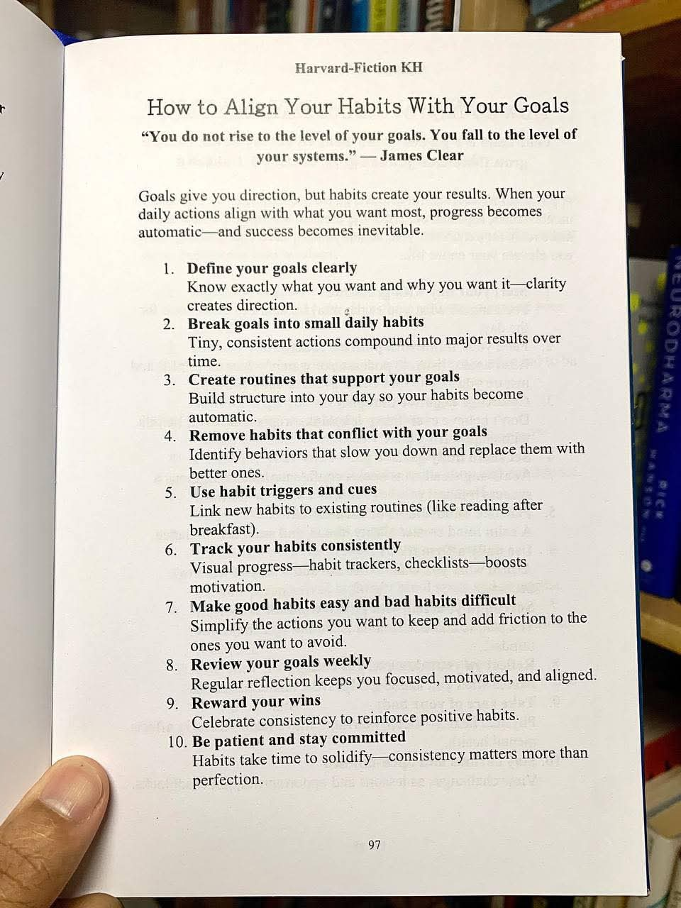

Kabut tipis merayap lambat di antara celah pohon rasamala, membawa aroma humus basah dan sisa hujan sore yang mendinginkan hamparan Ranca Upas. Di bawah langit Ciwidey yang perlahan menggelap, nyala api unggun kecil mulai menari-nari, memantulkan bayangan empat orang anak muda yang sedang sibuk menyusun perimeter perkemahan mereka. Mereka bukan pelancong biasa yang sekadar mencari pelarian dari penatnya kota; mereka adalah empat sekawan alumni Teknik Industri dari sebuah perguruan tinggi terkemuka di Bandung—insan-insan terlatih yang biasa melihat dunia lewat kacamata optimasi, efisiensi, dan rekonstruksi sistem.
Aris, yang bertindak sebagai koordinator logistik malam itu, dengan cekatan mengencangkan tali pancang tenda dome berkapasitas enam orang. Setiap gerakannya mencerminkan prinsip ergonomi dan studi gerakan yang matang. Di sebelahnya, Citra—satu-satunya wanita dalam kelompok tersebut, seorang analis sistem manufaktur di salah satu perusahaan multinasional—sedang menata kompor lapangan dan peranti memasak dengan susunan yang menyerupai tata letak fasilitas pabrik berstandar tinggi. Sementara itu, Dimas dan Bintang duduk di atas kursi lipat, mengamati nyala api sembari mengonfigurasi perangkat pencahayaan LED bertenaga surya.
Gagasan untuk berkemah di akhir pekan ini lahir dari keresahan bersama yang kerap mengemuka dalam grup obrolan mereka. Sebagai profesional muda berusia pertengahan dua puluhan yang hidup di jantung kota Bandung, mereka sering merasa terjebak dalam dikotomi antara ambisi besar dan realitas keseharian yang semrawut. Mereka menyadari bahwa kecerdasan akademis dan gelar sarjana teknik tidak serta-merta membuat hidup mereka berjalan secara otomatis menuju kesuksesan tanpa adanya struktur yang disiplin.
Citra menggumamkan kutipan tersebut sambil menuangkan air panas ke dalam empat cangkir enamel berisi kopi tubruk. "Kalian ingat diktat rekayasa produktivitas semester enam dulu? Kita selalu sibuk mendefinisikan target output, kapasitas terpasang, dan Key Performance Indicators. Namun, kita sering lupa bahwa tanpa adanya perancangan prosedur operasi standar yang kokoh, semua target itu hanyalah angka kosong di atas kertas. Hal yang sama terjadi pada resolusi hidup kita masing-masing."
Aris mendekat, mengambil tempat duduk di dekat perapian dan menerima cangkir kopi dari Citra. "Tepat sekali, Cit. Aku merasakannya sendiri dalam tiga bulan terakhir di kantor. Aku menargetkan diri untuk menguasai algoritma optimasi rantai pasok yang baru sebelum pertengahan tahun. Namun, setiap kali pulang dari kawasan industri di Cimahi dalam keadaan lelah, aku justru menghabiskan malam dengan bergulir di media sosial hingga larut. Tujuanku sangat jelas, tetapi sistem harian yang kujalani benar-benar rusak."
Langkah Pertama: Mendefinisikan Target dengan Presisi
Dimas, yang sejak tadi terdiam sambil membolak-balik sepotong kayu bakar, menyahut dengan nada bicaranya yang khas—tenang dan analitis. "Dalam metodologi Six Sigma, langkah awal selalu dimulai dengan 'Define'. Masalah terbesar kita sering kali bukan karena kita tidak tahu apa yang kita inginkan, melainkan karena kita tidak tahu mengapa kita menginginkannya dengan cukup spesifik. Kejelasan tujuan melahirkan arah tindakan. Kita harus mendefinisikan target secara rigid, bukan abstrak."
Bintang setuju dengan argumen Dimas. Menurutnya, banyak rekan sejawat mereka di Bandung yang terjebak dalam pusaran 'ambisi semu' karena ikut-ikutan tren pencapaian di lingkaran profesional. Mereka ingin menjadi manajer sebelum usia tiga puluh, ingin memiliki portofolio investasi bernilai ratusan juta, atau mendirikan perusahaan rintisan sendiri, tanpa pernah menguliti esensi di balik keinginan tersebut. "Tanpa kejelasan orientasi, energi kita akan terdispersi ke segala arah seperti fluida dalam pipa yang bocor," tambah Bintang menggunakan analogi mekanika.
Malam semakin larut, dan suhu udara Ranca Upas merosot tajam menyentuh angka empat belas derajat Celsius. Namun, diskusi di sekitar api unggun itu justru semakin hangat. Mereka mulai membedah bagaimana prinsip-prinsip teknik industri dapat ditransformasikan menjadi panduan praktis untuk membangun kebiasaan hidup yang selaras dengan cita-cita besar mereka.
Dekomposisi dan Pembentukan Rutinitas Baru
Citra kemudian mengambil buku catatan kecil dari dalam tasnya. Di bawah pendaran lampu kerja, ia memperlihatkan sebuah skema dekomposisi tugas yang biasa ia gunakan untuk memecah proyek manufaktur skala besar. "Prinsip kedua adalah memecah sasaran makro menjadi kebiasaan mikro harian. Tindakan-tindakan kecil yang konsisten akan berakumulasi secara eksponensial dari waktu ke waktu melalui efek penggandaan atau compounding effect. Ini sama seperti perbaikan berkelanjutan, Kaizen."
Ia mencontohkan bagaimana target Aris untuk menguasai algoritma baru bisa didekomposisi menjadi tindakan sederhana: membaca dua halaman dokumentasi teknis setiap hari tepat setelah ritual minum kopi pagi. Tidak perlu langsung mengalokasikan waktu tiga jam yang melelahkan di akhir pekan, melainkan cukup sepuluh hingga lima belas menit setiap hari secara konsisten.

Aris mengangguk-angguk, mulai menangkap urgensi dari apa yang dipaparkan Citra. "Jadi, intinya adalah membangun struktur harian sedemikian rupa sehingga kebiasaan baik tersebut menjadi bersifat otomatis. Kita harus merancang rutinitas yang mendukung tujuan kita, persis seperti merancang lintasan perakitan yang meminimalkan waktu tunggu dan gerakan sia-sia atau waste."
Bintang menimpali, "Dan jangan lupa untuk mengeliminasi kebiasaan yang bertentangan dengan tujuan tersebut. Dalam istilah kita, itu adalah proses eliminasi bottleneck atau hambatan dalam sistem. Jika kita tahu bahwa meletakkan ponsel di samping tempat tidur sebelum tidur akan memicu begadang yang merusak kesegaran pagi hari, maka letakkan ponsel itu di meja seberang ruangan. Persulit akses terhadap kebiasaan buruk, dan permudah akses terhadap kebiasaan baik."
Pemicu dan Pemantauan Konsistensi
Dimas menambahkan dimensi lain dari perspektif psikologi perilaku yang dikombinasikan dengan otomatisasi industri. "Gunakan pemicu atau habit triggers. Tautkan kebiasaan baru yang ingin kita bangun dengan rutinitas mapan yang sudah ada. Misalnya, setelah saya menyelesaikan laporan mingguan hari Jumat, saya langsung menjadwalkan evaluasi diri selama lima belas menit. Ritual yang sudah ada bertindak sebagai instruksi kerja otomatis bagi otak kita."
Selain itu, mereka sepakat bahwa sistem tidak akan berjalan efektif tanpa adanya fungsi kontrol atau monitoring. Sebagai sarjana teknik, mereka sangat akrab dengan konsep umpan balik dalam sistem lingkar tertutup atau closed-loop system. "Kita perlu melacak kebiasaan kita secara konsisten," kata Citra tegas. "Bisa menggunakan aplikasi pelacak kebiasaan, papan tulis kecil di kamar, atau jurnal visual sederhana. Melihat kemajuan visual memberikan dorongan dopamin kuantitatif yang meningkatkan motivasi untuk terus berada dalam jalur yang benar."
Bintang menyalakan beberapa ranting kayu baru untuk menjaga api tetap menyala. "Tentu saja, dalam setiap implementasi sistem baru, akan ada deviasi atau variansi. Di sinilah pentingnya melakukan peninjauan sasaran secara berkala, katakanlah setiap minggu. Refleksi reguler menjaga kita tetap fokus, termotivasi, dan memastikan bahwa sistem kita tidak mengalami pergeseran parameter yang tidak diinginkan."
Apresiasi Terhadap Proses dan Komitmen Jangka Panjang
Di penghujung malam, sebelum mereka memutuskan untuk masuk ke dalam kantong tidur masing-masing, Aris merangkum esensi dari diskusi panjang mereka di bawah langit malam Ciwidey. "Kita sering kali terlalu keras pada diri sendiri mengenai hasil akhir, tetapi abai terhadap sistem yang kita jalani setiap hari. Kita harus belajar menghargai setiap kemenangan kecil—merayakan konsistensi untuk memperkuat kebiasaan positif tersebut."
Citra tersenyum seraya menutup buku catatannya. "Ingat kata kuncinya: bersikap sabar dan tetap berkomitmen. Kebiasaan membutuhkan waktu untuk mengkristal dan menyatu dengan identitas diri kita. Dalam jangka panjang, konsistensi jauh lebih bernilai ketimbang kesempurnaan sesaat. Sebuah sistem yang andal adalah sistem yang tangguh menghadapi fluktuasi, namun tetap bergerak maju menuju titik optimal."
Suara jangkrik dan desau angin pegunungan Bandung Selatan mengiringi padamnya bara api unggun. Empat sekawan itu melangkah masuk ke dalam tenda dengan pemikiran yang jauh lebih jernih dan tertata. Di tengah keheningan alam Ranca Upas, mereka tidak hanya menemukan kesegaran fisik dari penatnya rutinitas urban, melainkan juga sebuah rancang bangun baru untuk menata ulang algoritma kehidupan mereka sendiri—sebuah komitmen untuk tidak lagi sekadar bermimpi, melainkan membangun sistem nyata yang akan mengantarkan mereka pada tujuan.